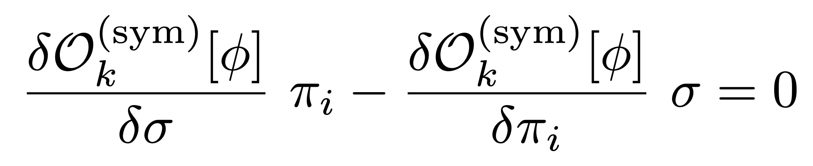

<section class="resume-section" id="news">
    <div class="resume-section-content">
        <h2 class="mb-5">News & Highlights</h2>

        <h3> Recent papers </h3>

        <div class="list-container">

            <div class="list-item">
                <h4 class="mb-0">Finite density signatures of confining and chiral dynamics in QCD 
                    thermodynamics and fluctuations of conserved charges</h4>
                <p>Lu, Gao, Liu, Pawlowski, <a href="https://arxiv.org/abs/2504.05099"
                        target="_blank">arXiv:2502.15384</a>
                </p>

                <div class="text-center">
                    
                </div>

                </p> We evaluate thermodynamic observables such as pressure, baryon number, entropy and energy density, 
                as well as the second and fourth order baryon number cumulants in the phase structure of QCD. 
                The intertwined confinement and chiral dynamics is resolved within functional QCD, aiming for 
                quantitative accuracy at larger densities. Specifically it is shown that the self-consistent resolution 
                of the confining gluonic background is crucial in particular for even the qualitative properties of 
                the cumulants. Our results are in quantitative agreement with lattice and functional QCD benchmarks 
                at vanishing and small chemical potentials. Moreover, they offer novel insights in the dynamics at 
                larger chemical potentials including the regime of the critical end point. A welcome by-product of 
                this analysis is the computation of the Polyakov loop potential in finite density QCD, which, 
                alongside the aforementioned observables, can be used as input and benchmark for effective theory 
                computations at finite density. 
                <p>

            </div>
            
            <div class="list-item">
                <h4 class="mb-0">Juggling with Tensor Bases in Functional Approaches</h4>
                <p>Braun, Geissel, Pawlowski, Sattler, Wink, <a href="https://arxiv.org/abs/2503.05580"
                        target="_blank">arXiv:2502.15384</a>
                </p>

                <div class="text-center">
                    
                </div>

                </p> Systematic expansion schemes in functional approaches require the inclusion of higher order
                vertices. These vertices are expanded in independent tensor bases with a rapidly increasing number of
                basis elements. Amongst the related tasks are the construction of bases and projection operators, the
                importance ordering of their elements, and the optimisation of such tensor bases, as well as an analysis
                of their regularity in momentum space. We present progress in all these directions and introduce the
                Mathematica package TensorBases designed for the aforementioned tasks.
                <p>

            </div>

            <div class="list-item">
                <h4 class="mb-0">Quasi parton distributions of pions at large longitudinal momentum</h4>
                <p>Zhang, Huang, Fu, <a href="https://arxiv.org/abs/2502.15384" target="_blank">arXiv:2502.15384</a>
                </p>

                <div class="text-center">
                    
                </div>

                </p> In this paper, we develop an approach to calculate the valence-quark quasi parton distribution
                amplitude (quasi-PDA) and quasi parton distribution function (quasi-PDF) for the pion with a large
                longitudinal momentum with the functional renormalization group (fRG). This is demonstrated in a low
                energy effective theory (LEFT) with four-quark scatterings. In the study of the complex structure of
                quasi-PDA, we introduce a deformed integration contour in the calculations of quasi-PDA or quasi-PDF,
                which allows us to obtain correct integrals for all momentum fractions. It is found that the pion
                light-front PDA extrapolated from quasi-PDA based on the large momentum effective theory (LaMET) in the
                LEFT is comparable with lattice QCD and Dyson-Schwinger equation. This work paves the way to study the
                PDA and PDF within the fRG approach to first-principles QCD.
                <p>

            </div>

            <div class="list-item">
                <h4 class="mb-0">Four-quark scatterings in QCD III</h4>
                <p>Fu, Huang, Pawlowski, Tan, Zhou, <a href="https://arxiv.org/abs/2502.14388"
                        target="_blank">arXiv:2502.14388</a></p>

                <div class="text-center">
                    
                </div>

                </p> We study the full infrared dynamics of 2+1 flavour QCD with the functional renormalisation group
                approach. We resolve self-consistently the glue dynamics as well as the dynamics of chiral symmetry
                breaking. The computation hosts no phenomenological parameter or external input. The only ultraviolet
                input parameters are the physical ones in QCD: the light and strange quark masses. They are adjusted to
                the physical ratios of the pion and kaon masses, divided by the pion decay constant. The results for
                other observables of current first-principles computations are in quantitative agreement with the
                physical ones. This work completes the series of papers, initiated and furthered in [1,2], on dynamical
                chiral symmetry breaking and the emergence of mesonic bound states within the functional renormalisation
                group. As a first application we discuss the formation of light mesonic bound states. Amongst other
                applications such as the phase structure of QCD, the current work paves the way for studying QCD parton
                distribution functions within the functional renormalisation group approach to first-principles QCD.
                <p>

            </div>


            <div class="list-item">
                <h4 class="mb-0">The QCD moat regime and its real-time properties</h4>
                <p>Fu, Pawlowski, Pisarski, Rennecke, Wen, Yin, <a href="https://arxiv.org/abs/2412.15949"
                        target="_blank">arXiv:2412.15949</a></p>

                <div class="text-center">
                    
                </div>

                </p> Dense QCD matter may exhibit crystalline phases. Their existence is reflected in a moat regime,
                where mesonic correlations feature spatial modulations. We study the realtime properties of pions at
                finite temperature and density in QCD in order to elucidate the nature of this regime. We show that the
                moat regime arises from particle-hole-like fluctuations near the Fermi surface. This gives rise to a
                characteristic peak in the spectral function of the pion at nonzero spacelike momentum. This peak can be
                interpreted as a new quasi particle, the moaton. In addition, our framework also allows us to directly
                test the stability of the homogeneous chiral phase against the formation of an inhomogeneous condensate
                in QCD. We find that the formation of such a phase is highly unlikely for baryon chemical potentials \(
                \mu_B \leq 630\, {\rm MeV} \)
                <p>
            </div>


            <div class="list-item">
                <h4 class="mb-0">Phase structure of quark matter and in-medium properties of mesons from Callan-Symanzik
                    flows</h4>
                <p>Töpfel, Pawlowski, Braun, <a href="https://arxiv.org/abs/2412.16059"
                        target="_blank">arXiv:2412.16059</a></p>

                <div class="text-center">
                    
                </div>

                </p> We compute meson spectral functions at finite temperature and density in the quark-meson model,
                supplemented with a computation of the phase diagram. In particular, we provide a detailed analysis of
                the non-analytic structure of the meson two-point functions which is of great relevance for
                phenomenological applications, such as moat regimes and inhomogeneous phases. Furthermore, it is also
                relevant from a field-theoretical standpoint as it provides an insight into the applicability of
                derivative expansions of the effective action to studies of general fermion-boson models, both at zero
                and finite chemical potential. Our computation is based on a functional renormalization group setup that
                preserves causality, all spacetime symmetries, and the Silver-Blaze property. The combination of these
                properties can only be achieved by a Callan-Symanzik regulator. Instead of momentum shell integrations,
                renormalization group flows generated by such a regulator describe the change of the theory induced by a
                change of the masses of the mesons and quarks. A particular focus of our work lies on the construction
                of controlled Callan-Symanzik flows in the presence of spontaneous and explicit chiral symmetry breaking
                by means of chiral Ward-Takahashi identities.
                <p>
            </div>


            <div class="list-item">
                <h4 class="mb-0">Towards quantitative precision in functional QCD I</h4>
                <p>Ihssen, Pawlowski, Sattler, Wink, <a href="https://arxiv.org/abs/2408.08413"
                        target="_blank">arXiv:2408.08413</a></p>

                <div class="text-center">
                    
                </div>

                </p> Functional approaches are the only first principle QCD setup that allow for direct computations at
                finite density. Predictive power and quantitative reliability of the respective results can only be
                obtained within a systematic expansion scheme with controlled systematic error estimates. Here we set up
                such a scheme within the functional renormalisation group (fRG) approach to QCD, aiming for full
                apparent convergence. In the current work we test this setup, using correlation functions and
                observables in 2+1 flavour vacuum QCD as a natural benchmark case. While the current work includes many
                evolutionary improvements collected over the past two decades, we also report on three novel important
                developments: (i) A comprehensive systematic error analysis based on the modular nature of the fRG
                approach. (ii) The introduction of a fully automated computational framework, allowing for unprecedented
                access and improvement of the fRG approach to QCD. (iii) The inclusion of the full effective potential
                of the chiral order parameter. This also gives access to all-order scattering events of pions and to the
                full momentum dependence of correlation functions, which is a first application of the automated
                computational framework (ii). The results compare very well to other state-of-the-art results both from
                functional approaches and lattice simulations, and provide data on general multi-scattering events of
                pions and the sigma mode for the first time.
                <p>
            </div>

        </div>


        <h3 class="mt-5"> Other news </h3>
        <div class="list-container">


            <div class="list-item">
                <h4 class="mb-2">Plenary talk at Quark Matter 2025</h4>
                <p> Fabian Rennecke will present a plenary talk on 'The QCD phase structure and its signatures from
                    functional approaches' at the
                    <a href="https://indico.cern.ch/event/1334113/" target="_blank"> Quark Matter 2025</a> conference,
                    which is taking place from April 6-12 in Frankfurt, Germany.
                </p>
            </div>

            <div class="list-item">
                <h4 class="mb-2">Yong-rui Chen won Humboldt Fellowship</h4>
                <p> Yong-rui Chen won the prestigious <a
                        href="https://www.humboldt-foundation.de/en/apply/sponsorship-programmes/humboldt-research-fellowship"
                        target="_blank">Humboldt Research Fellowship</a>.</p>
            </div>

            <div class="list-item">
                <h4 class="mb-2">Plenary talk at QCHSC 2024</h4>
                <p> Fabian Rennecke presented a plenary talk on <a
                        href="https://indico.global/event/12671/contributions/112731/attachments/52036/100126/Confinement2024_Rennecke.pdf"
                        target="_blank">The QCD phase structure and its signatures from functional approaches</a> at the
                    <a href="https://indico.global/event/12671/" target="_blank">XVIth Quark Confinement and the Hadron
                        Spectrum Conference</a> conference, which was held from Aug. 18-24 in Cairns, Australia.
                </p>
            </div>

            <div class="list-item">
                <h4 class="mb-2">Plenary talk at SEWM 2024</h4>
                <p> Fabian Rennecke presented a plenary talk on <a
                        href="https://indico.physik.uni-bielefeld.de/event/100/contributions/313/attachments/265/431/SEWM2024_Rennecke.pdf"
                        target="_blank">The QCD phase structure and its signatures from functional approaches</a> at the
                    <a href="https://indico.physik.uni-bielefeld.de/event/100/" target="_blank">Strong and Electro-Weak
                        Matter 2024</a> conference, which was held from Aug. 25-30 in Frankfurt, Germany.
                </p>
            </div>

            <div class="list-item">
                <h4 class="mb-2">Lecture series at the XQCD 2024 summer school</h4>
                <p> Jan M. Palwowski gave a lecture series on
                    <a href="https://indico.cern.ch/event/1388433/contributions/6015806/attachments/2896049/5077822/Lectures_XQCD24_pawlowski.pdf target="
                        _blank"> Functional QCD and the QCD phase structure </a> at the <a
                        href="https://indico.cern.ch/event/1388433/overview" target="_blank"> PhD School on QCD under
                        extreme conditions,
                        14 - 16 July, 2024 </a>, accompanying <a href="https://indico.cern.ch/event/1388433/overview"
                        target="_blank"> XQCD </a>,
                    held in Lanzhou, China, 14 - 16 July.
                </p>
            </div>

            <div class="list-item">
                <h4 class="mb-2">Shi Yin won Humboldt Fellowship</h4>
                <p> Shi Yin won the prestigious <a
                        href="https://www.humboldt-foundation.de/en/connect/explore-the-humboldt-network/singleview/1235474/dr-shi-yin"
                        target="_blank">Humboldt Research Fellowship</a>.</p>
            </div>


            <div>

            </div>
</section>